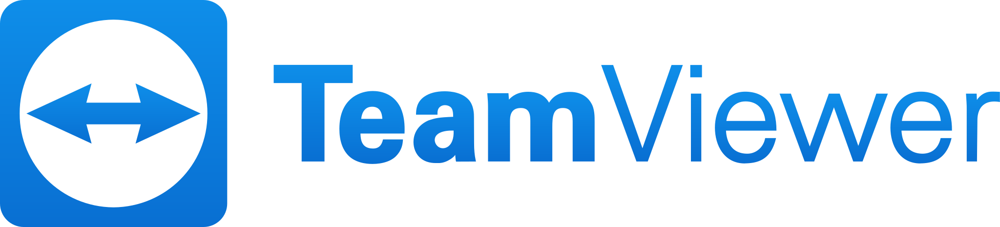

TeamViewer Anlık destekTeamViewer QuickSupport
Anlık teknik destek almak için kullanılır. Kurulum ve yönetici yetkisi gerektirmez: indirip çift tıklamanız, ekranda çıkan kimlik ve şifreyi bize iletmeniz yeterlidir.
Destek talebiniz sonrasında aşağıdaki programlardan size uygun olanı indirip çalıştırmanız yeterli.
Dosyalar doğrudan TeamViewer'ın resmi sunucularından indirilir. 32 bit sürüm veya Linux gerekiyorsa bize yazın.

TeamViewer Anlık destekAnlık teknik destek almak için kullanılır. Kurulum ve yönetici yetkisi gerektirmez: indirip çift tıklamanız, ekranda çıkan kimlik ve şifreyi bize iletmeniz yeterlidir.
Sunucular ve sürekli izlenmesi gereken cihazlar için kullanılır. Bir kez kurulur; bakım ve izleme için her seferinde onay verilmesi gerekmez. Kurulumu birlikte yapıyoruz.
Windows'ta indirilenler klasöründeki .exe dosyasına çift tıklayın. macOS'ta .dmg dosyasını açıp uygulamayı başlatın; ilk açılışta sistem izinleri istenebilir.
Programda görünen kimlik (ID) ve şifreyi destek@dny.com.tr adresine ya da görüşme yaptığınız yetkiliye iletin.
Ekranınızda çıkan bağlantı isteğini onaylayın. İşlem boyunca ekranı görürsünüz; bitince programı kapatın.
Yazın, işletim sisteminize ve ihtiyacınıza uygun olanı birlikte belirleyelim.